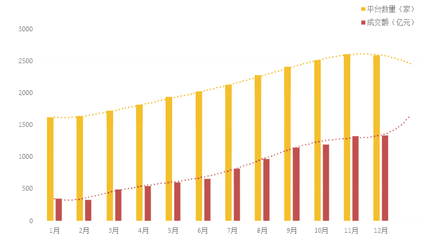

P2P舆情分析
- P2P舆情走势
- 行业热度
- 行业事件

平台数量及成交额
截至2015年12月底，网贷行业运营平台达到2595家，网贷成交量达到9823.04亿元，从预测曲线可以看出，2016年平台增长速度会有所放缓，但成交量依然呈现增长态势。

收益率与借款期限
2015年网贷行业综合收益率为13.29% ，纵观12个月综合收益率走势，前11个月几乎呈现单边下跌的态势，而受年末因素影响，投资人资金需求较大，带动12月网贷平台综合收益率的上升。不过预计2016年网贷综合收益率将降至10%-11%之间。2015年网贷行业平均借款期限为6.81个月，平均借款期限主要被一些成交量过10亿且平均借款期限在半年以上的平台拉高。从年度12个月的平均借款期限走势看，基本处于稳定状态介于6.5个月到7个月之间波动，表明网贷行业的平均借款期限已经趋向于稳定，预计2016年网贷行业平均借款期限约为7个月。

行业参与人数
2015年网贷行业投资人数与借款人数分别达586万人和285万人，网贷行业人气明显飙升。按目前增长态势，预计2016年网贷行业投资人数与借款人数或许将分别超过2000万人和900万人。